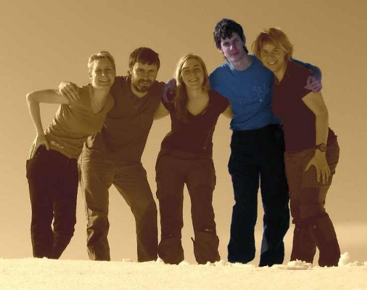

Tým
| Lenka | Vašek | Hanka | Sabča | |
|
Ondra | |
|
Od nekonečného váhání a nerozhodnosti utíkám za svými sny, možná by se jim dalo říct priority. Ač člověk za tuto svobodnou troufalost dost často "platí," tak se mu dostává kompenzace nepopsatelných pocitů. Občas se cítím jako letící pták. :-) Rád koukám na věci z výšky, třeba ze skal, na horách nebo z blízkosti vodní hladiny na Barace. Pravidla s úsměvem považuji za nutná, jinak by totiž nebylo co porušovat. Bezpochyby se můžu označit za věčného idealistu a studenta každým coulem. Na 20. století obdivuju nejvíc jeho rozervanost a nestálost. Umřelo, bylo umučeno nebo trpělo tolik miliónů lidí a já se snažím stále věřit, že tato smutná minulost povede alespoň k našemu ponaučení... |  |